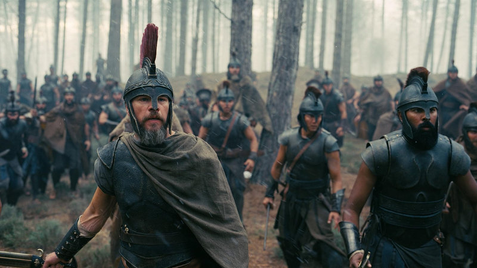

한동안 벼르다가 어제 가족과 함께 <오디세이>를 봤다. 명불허전으로 3시간 넘는 동안 지루할 틈 없이 흥분하고 감동했는데 도대체 오디세우스의 이 치열한 귀향 의지는 왜 번번이 막히는 것인가! 감독이 말하려던 게 무엇이길래 주인공을 이렇게 고생시킬까? (영화 자체의 스포일러는 없지만 <오디세이아> 원전에 대한 이야기는 약간 포함돼 있으므로 주의)
감독의 주제 의식 - 선택의 무게에 짓눌리는 주인공
<오디세이>의 원전은 그리스 고전이지만 당연하게도 감독은 현대적인 시선으로 해석했고 관객도 본인의 시각에서 감독이 하려는 이야기를 보게 된다. 감독이 말하려는 몇 가지 주제 의식이 보이는데 생각해보니 감독의 과거 영화에서도 보이는 것들이 있다.
그동안 내가 놀란 감독 영화를 본 게 꽤 된다.
- <메멘토> - 아내를 잃고 복수에 집착하는 남자
- <프레스티지> - 최고의 마술사가 되기 위해 모든 것을 내건 두 남자
- <다크나이트> - 어두운 도시 고담의 정의를 위해 희생하는 남자
- <인셉션> - 가족에게 돌아가기 위해 위험한 임무를 선택한 남자
- <인터스텔라> - 인류의 미래를 위해 가족을 떠나간 아버지
- <오디세이> - 전쟁의 대가를 짊어지고 집으로 돌아가는 영웅
이 영화들을 보면 그 서사에서 대부분 아래 공통점이 보인다.
- 주인공들이 어떤 목표만을 바라보며 여러 가지를 희생하고 때로는 집착한다.
- 주인공이 원하는 건 평범한 행복이다. 영웅도 나오지만 세상을 구원하는 게 최고 목표는 아니다.
- 선택에 대해 고민이 크지만 결과는 예상치 못한 방향이고 대가가 크다.
마치 이렇게 말하는 것 같다. “그래, 주인공이 죽자살자 뭔가를 했어. 그런데 그 결과를 감당할 수 있을까?”
<오디세이> 역시 비슷하다. 오디세우스는 전쟁을 승리로 이끈 영웅이지만 처음부터 영웅이 되려던 게 아니다. 이타카에 가족과 함께 남고 싶었으며 전쟁이 끝난 후에는 이타카의 집에 돌아가는 것이 가장 큰 목표다. 하지만 전쟁이 남긴 피해와 신과 믿음에 대한 혼란, 귀향길에서 잘못된 판단에 따른 고난과 전우의 희생 등은 주인공이 전혀 원한 결과가 아니었다.

위 사진은 오디세우스 일행이 “라이스트뤼고네스” 거인족을 마주치고 놀란 장면이다.
식량과 휴식을 위해 낯선 섬에 내리는 결정을 했는데 그 선택이 예상치 못한 재앙으로 이어진다. 놀란 영화의 주인공답게 의도는 좋았으나 결과는 마음대로 되지 않았다.
감독이 처음부터 오디세우스 역으로 맷데이먼을 염두에 두진 않았고 각본 완성 후 맷 데이먼이 작품에 가치를 높여 줄 거라고 생각했다는데 정말 공감된다. 놀람과 고뇌, 리더로서 상황을 통제하려는 모습, 전진과 후퇴를 반복하며 지쳐가는 모습 등을 잘 표현한다.
<오뒷세이아>(또는 오디세이아)는 호메로스의 원전 이래로 다양한 책과 극으로 형상화됐지만 이번 <오디세이> 영화는 상업적으로 가장 성공한 작품이다. 개봉 두 달도 되지 않아 전 세계 흥행 수입이 15억 달러를 넘어섰다.
원전은 같아도 어떻게 해석하고 표현하느냐에 따라 결과가 전혀 달라질 수 있다.
놀란 감독은 여러 영화에서 비슷한 질문을 관객에게 던졌던 것 같다. <오디세이>도 그런 주제 의식 아래 감독 특유의 영화적 표현으로 이야기를 전달했고 관객은 크게 호응했다.
오디세우스는 자신의 선택과 그 결과에 대해 고뇌했고 전우와 가족의 희생에 죄책감을 느꼈다. 후반부에 사냥개 아르고스가 오디세우스를 알아보는 순간, 그동안 오디세우스의 어깨에 얹혀 있던 짐이 잠시 내려가는 것 같았다. 나는 그 장면에서 먹먹해졌다.
감독의 다음 영화에서는 누구를 고생시킬지 궁금하다.
댓글
댓글을 불러오는 중입니다.